Features
Stats
- Track your mastery/completion/score attack stats of your entire collection and setlists
- Track your per-song stats viz. mastery, progress history .
Steam
- integrates with steam, search dlcs and track your purchased stats.
- sort dlcs by acquired date
- discover similar dlcs based on genre
Setlists
Realtime Stats (integrates RockSniffer)
Screenshots
Dashboard
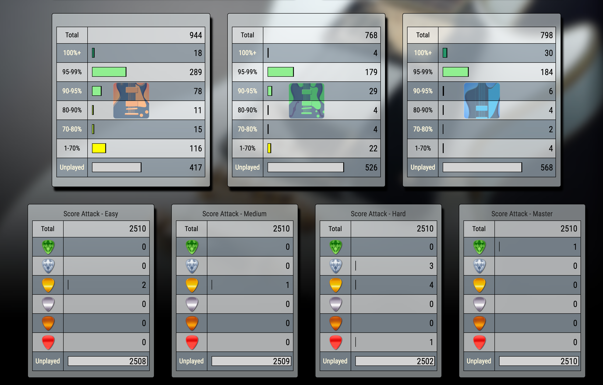
High Level Stats
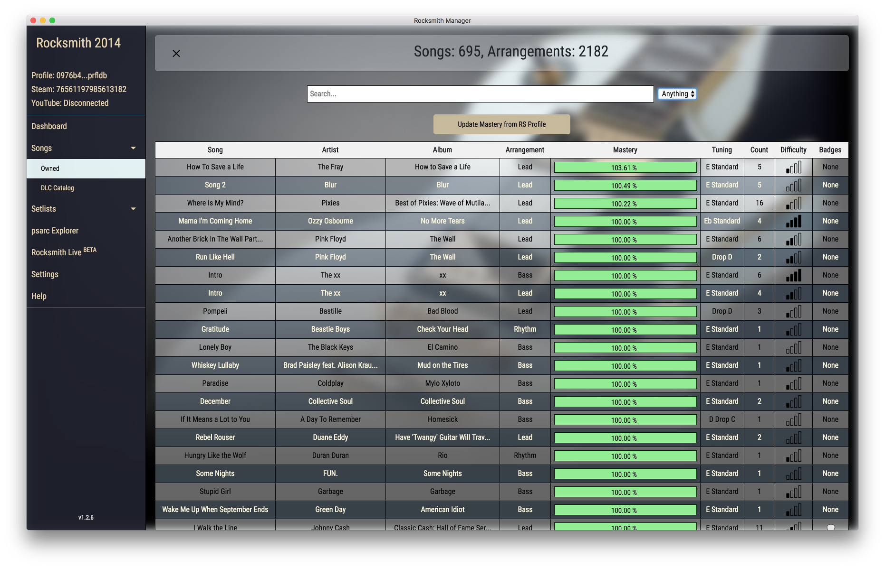
Songs Collection
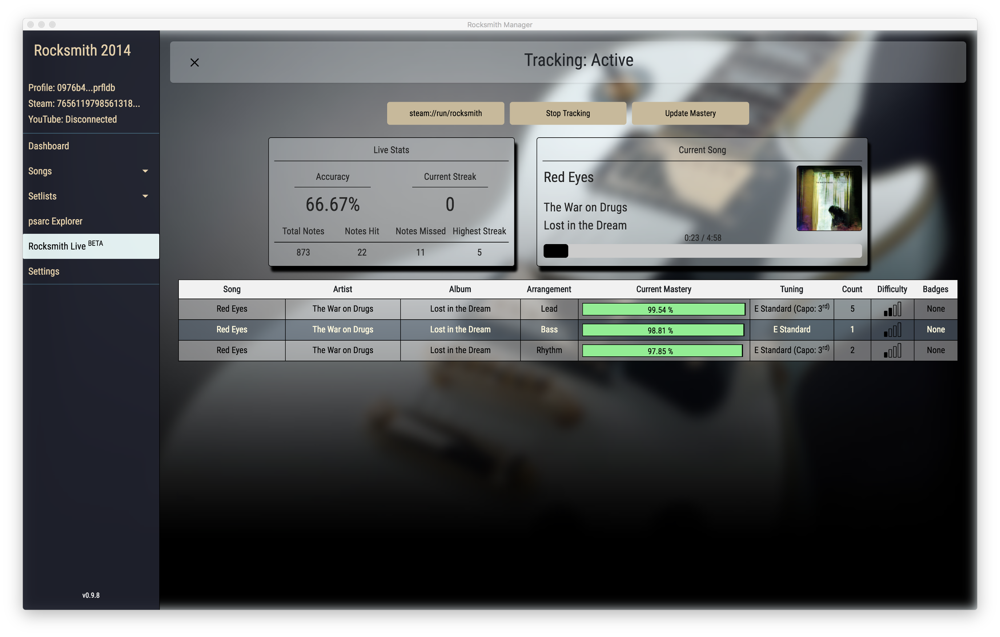
Rocksmith Live
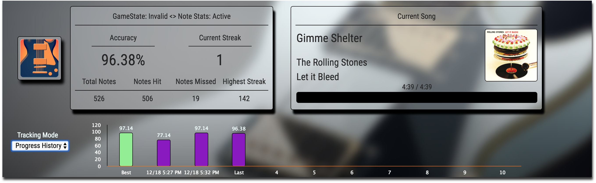
Progress History
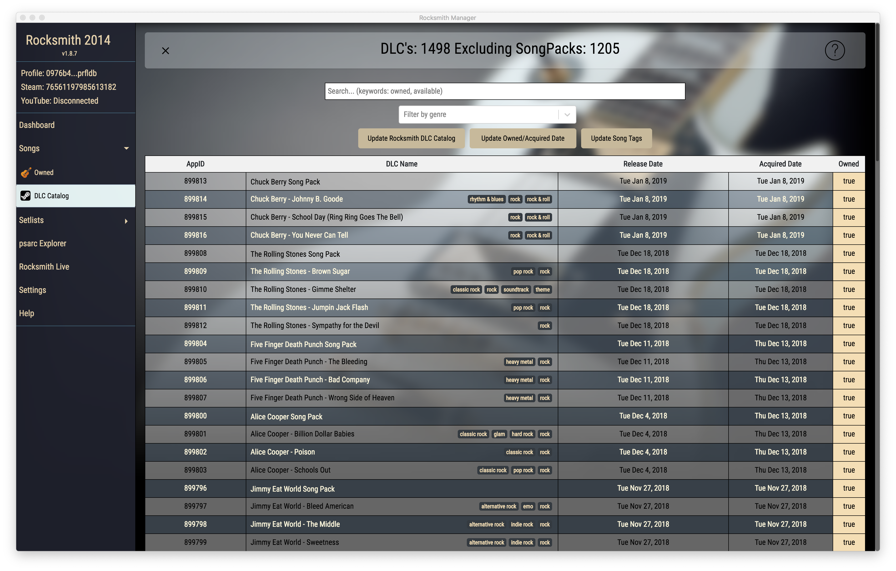
DLC's available
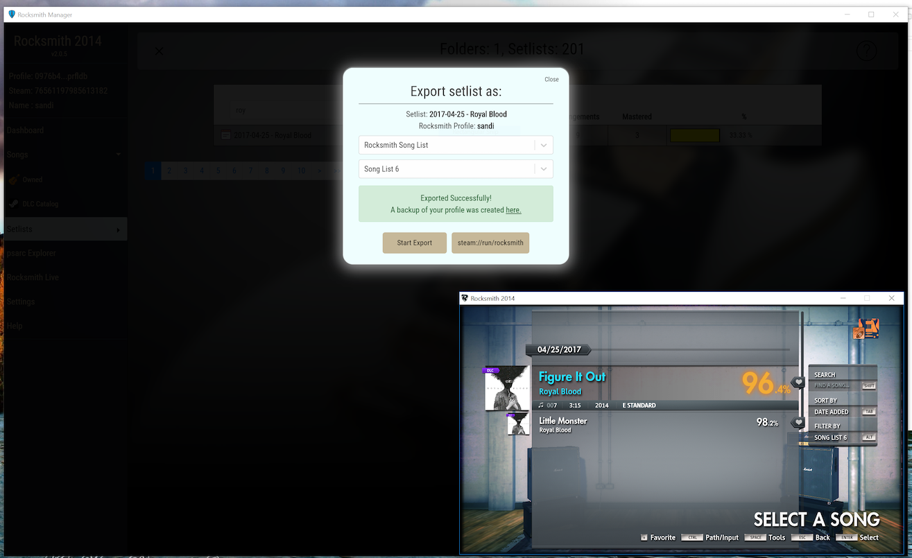
Export Setlist to a Rocksmith Song List
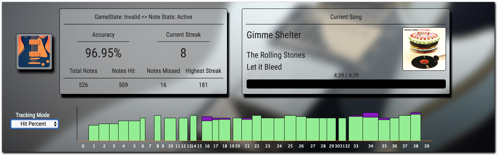
Hit Tracking
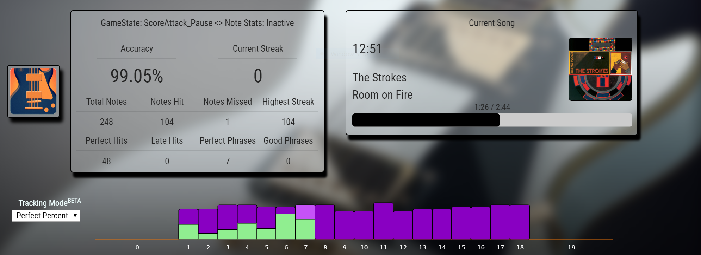
Perfect Tracking
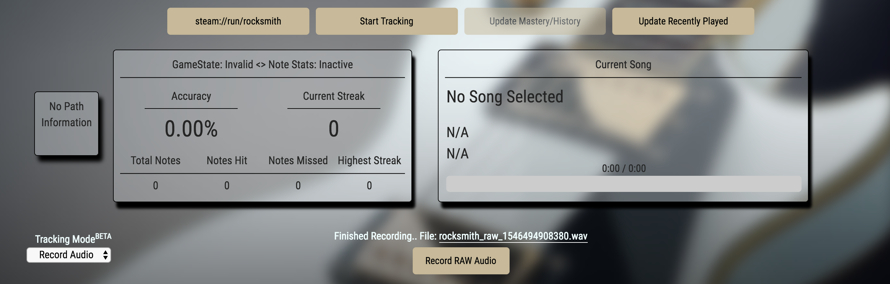
Record Rocksmith Session
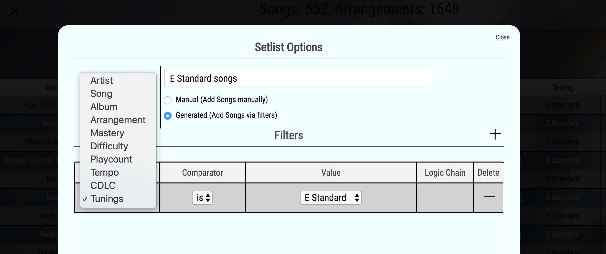
Setlists Filters

Setlists Filter - 2
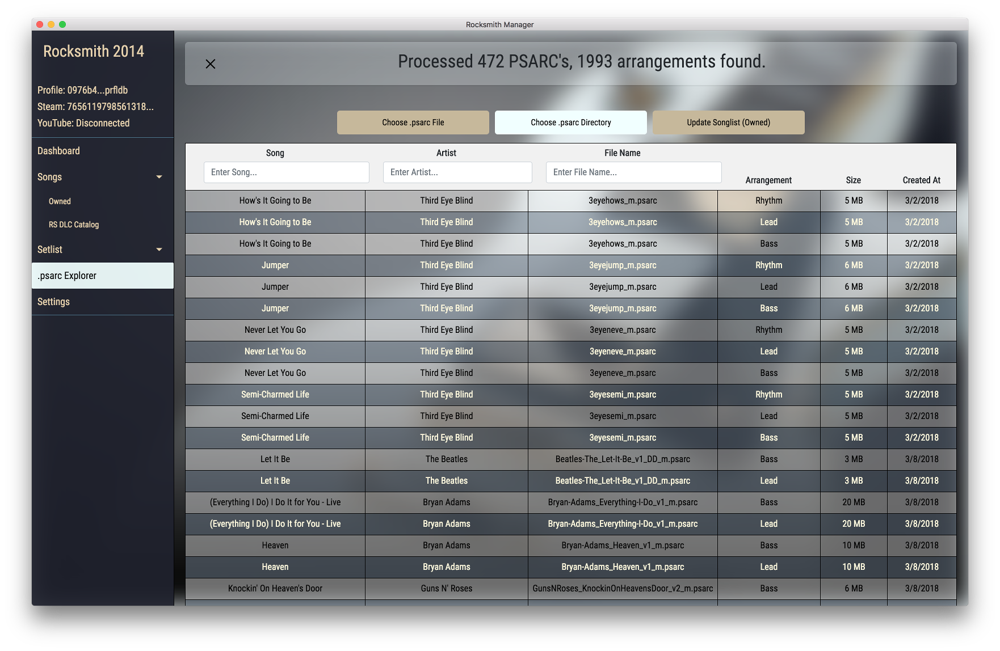
PSARC Explorer
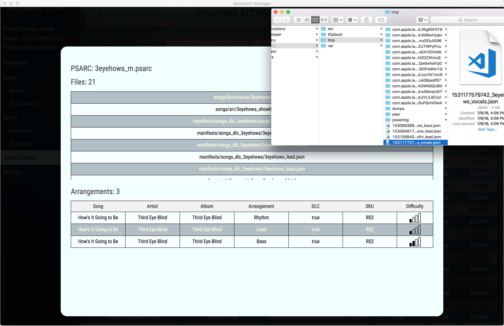
Extract files from PSARC